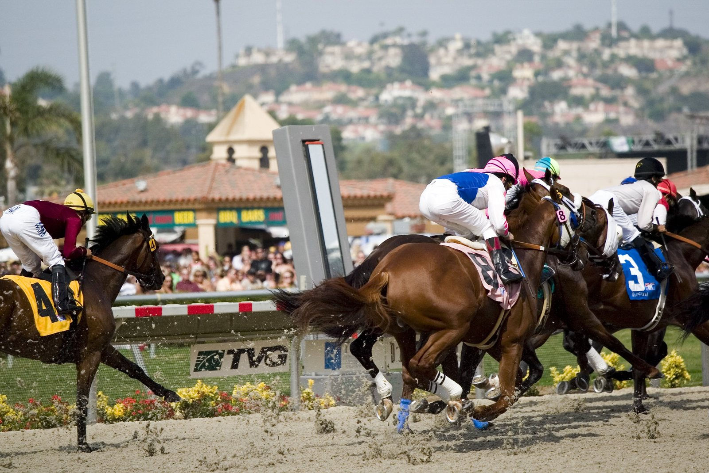

Una cabeza separa a Annie's Song de Leyhaimur en el Premio Roberto Cocheteux
Annie's Song salió en cabeza y resistió hasta el poste el ataque de Leyhaimur en el Premio Roberto Cocheteux, la prueba principal del domingo 4 de octubre en el Hipódromo de la Zarzuela.

Con Denisa Sikorová en la monta, la yegua de la Cuadra Zul tomó el mando desde la salida en los 1.600 metros de esta Categoría C, reservada a yeguas de tres años en adelante. Ocho aspirantes tomaron parte tras las retiradas de Aitana y Lady Sahara. En la recta, Leyhaimur fue recortando metro a metro y obligó a Annie's Song a emplearse a fondo. La diferencia en el poste fue de una cabeza. See the Dream entró tercera, a medio cuerpo de la segunda.
Preparada por Cristina Buesa, Annie's Song es hija de Presidency y Kuboki y criada por la propia Cuadra Zul. La carrera servía de preparatoria para el Gran Premio 85 Aniversario HZ del 1 de noviembre.
El nombre propio de la mañana fue el de Guillermo Arizkorreta, que ganó tres carreras como preparador. Bulnes, de la Yeguada Rocío y montado por Václav Janáček, se impuso por más de un cuerpo a Selenien en el Premio Santiago Galaz, de reclamar. Shy Guy marcó el paso en el Premio Carlos Arniches, primera parte del hándicap dividido sobre 1.800 metros, y aguantó a Turronera, segunda a un cuerpo. Cerró el programa Zelrya, que remató en los últimos metros del Premio Ramón Mendoza, 1.200 metros en línea recta, para dejar a Katxorro a más de dos cuerpos. Shy Guy y Zelrya corrieron con los colores de la Cuadra Mediterráneo y con Jaime Gelabert en la silla.
La Cuadra Amem ganó el mismo día de su estreno. Soltan Gatsby viajó en la cola del pelotón en el Premio Oktoberfest 2026, segunda parte del hándicap, y fue ganando posiciones hasta adelantarse a Khandela por casi tres cuerpos. Lo montó Clement Cadel, que sustituía a Ricardo Sousa, y lo prepara Christian Delcher.
La jornada había arrancado a las 11:15 con el Premio Leopoldo Michelena, para dos años sobre 1.500 metros. El favorito, Requejo Legend, de la Cuadra Balbas Alonso, salió de mitad del pelotón y superó a Dragon Force por dos cuerpos. Lo prepara Miguel Alonso Roldán y lo montó Alejandro Gutiérrez Val.
Fichas: D. Sikorova (jinete) · J. Gelabert (jinete) · V. Janacek (jinete) · C.Buesa (preparador) · G.Arizkorreta (preparador)
— Redacción de Galope al Día